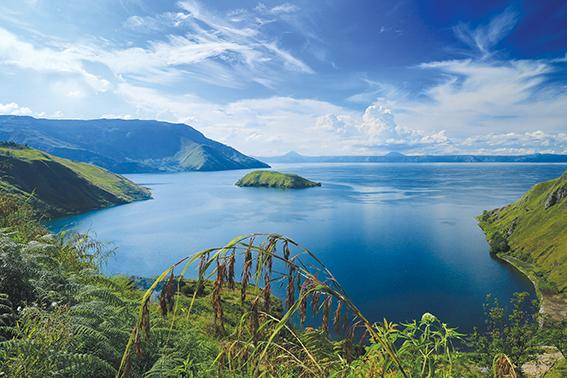

Danau Toba merupakan salah satu cerita rakyat dari Sumatera Utara yang terkenal di beberapa penjuru daerah.
Kisah ini bercerita tentang terbentuknya Danau Toba dan Pulau Samosir yang ada di Sumatera Utara . Kedua tempat tersebut kini menjadi wisata budaya yang sering dikunjungi oleh masyarakat dari luar kota.
Cerita Rakyat Danau Toba
Kisah ini bermula dari seorang pemuda bernama Toba. Ia merupakan yatim piatu yang hidup sebatang kara. Pekerjaan sehari-hari dari Toba adalah memancing atau bekerja di ladang.
Suatu hari, Toba memutuskan untuk memancing di sungai untuk dijadikan sebagai lauk. Beruntungnya, mata kail yang dilemparkan berhasil menangkap seekor ikan besar.
Ikan tersebut menarik perhatian Toba karena ukuran serta bentuknya yang berbeda dari ikan-ikan lainnya. Warna ikan itu adalah kekuningan dan sisik-sisiknya kuning keemasan. Toba semakin terkejut ketika melihat ikan tersebut berubah menjadi seorang perempuan yang cantik jelita
"Tuan, aku adalah kutukan Dewa karena telah melanggar larangan besarnya. Telah ditakdirkan kepadaku, bahwa aku akan berubah bentuk menyerupai makhluk apa saja yang memegang atau menyentuhku. Karena tuan telah memegangku, maka akupun berubah menjadi manusia seperti Tuan ini," ungkap perempuan tersebut.
Toba akhirnya membawa perempuan tersebut ke rumah dan karena kecantikan yang dimiliki oleh perempuan itu, Toba meminta izin untuk menikahinya. Perempuan itu lantas menyetujui tetapi dengan beberapa syarat.
"Permintaanku hanya satu, hendaklah tuan menutup rapat-rapat rahasiaku. Jangan sekali-kali tuan menyebutkan jika aku berasal dari ikan. Ji ka tuan menyatakan kesediaan tuan untuk menjaga rahasia ini, aku bersedia menjadi istri Tuan," jelas perempuan tersebut.
Toba pun menyetujuinya dan mereka pun menikah. Pernikahan tersebut berjalan sesuai dengan harapan. Keduanya hidup dalam kebahagiaan dan juga kesederhanaan hingga akhirnya mereka memiliki seorang anak laki-laki bernama Samosir.
Samosir tumbuh menjadi anak yang memiliki kepribadian cukup nakal dan sulit untuk dimintai tolong. Bahkan Samosir hanya ingin tidur-tiduran saja di rumah tanpa membantu siapa pun. Tidak hanya itu, Samosir memiliki nafsu makan yang tinggi dan membuat Toba harus mencari lauk pauk yang lebih dari biasanya. Suatu hari, sang ibu meminta tolong kepada Samosir untuk mengantarkan makanan kepada Toba yang ada di ladang.
Meski malas, Samosir akhirnya mengiyakan permintaan ibunya dan berjalan menuju ladang. Sayangnya, baru sampai setengah perjalanan, Samosir merasa lapar dan memutuskan untuk memakan setengah bekal yang diberikan sang ibu untuk ayahnya.
Mengetahui bahwa makanannya hanya setengah saja, Toba marah dan membentak Samosir. Toba bahkan tidak sengaja mengatakan kepada Samosir bahwa ia adalah anak dari seekor ikan
Mendengar hal ini, Samosir pergi ke ibunya dan mengadukan apa yang telah dikatakan Toba. Apa yang diceritakan Samosir membuat sang ibu marah kepada suaminya, Toba, yang telah melanggar janji.
Tidak lama setelah itu, Samosir dan ibunya menghilang dan tanah yang sebelumnya dipijak oleh mereka mengeluarkan air yang begitu banyak. Air tersebut dalam sekejap membuat seluruh daratan yang ada di sekitarnya dipenuhi dengan air dan membentuk sebuah danau.
Kini, danau tersebut dikenal sebagai Danau Toba dan pulau yang ada di tengahnya adalah Pulau Samosir.